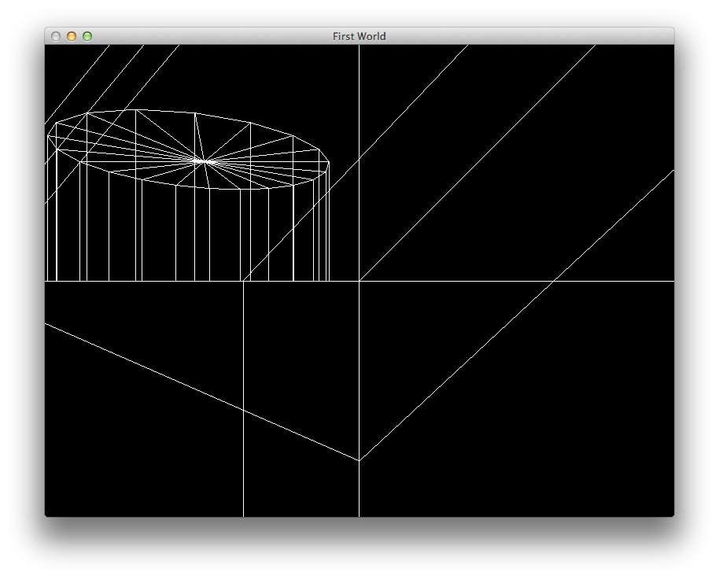

Duplicate the lab06c_wavefront_1 project, call the new one lab07a_wavefront_2.
Here is a zip of the source code only for the 06c project in case you need it, but you should have it from the last lab.
This is a simple cube:
The project should load and display this accurately.
This is a model of a cylinder:
What happens when this cylinder model is loaded?
What differences are there in the model file that cause this load/render to fail?
The name ModelObject is not very accurate, or satisfactory (using the word Object in a class name is problematic).
Rename ModelObject to Mesh. Renaming like this can be carried out in two ways:
Manually - hunting down all references and changing them
Using the refactoring menu - rely on Eclipse to do the above.
The latter is considerable more effective. Select the class in the Project Explorer as shown:
All references to the class name should be changed - check this (particularly in model.h/cpp)
You will need to manually rename the source file names modelobject,h/cpp ->mesh.h/cpp, which will also require a change in model.h/cpp
Build and test
struct Face
{
int vertices[3];
int textures[3];
Face(std::istream& is);
void render(std::vector <Vector3>&);
};
Face::Face(istream& is)
{
char ch1;
for (int i = 0; i < 4; i++)
{
string separator;
is >> vertices[i];
is >> ch1;
is >> textures[i];
}
}
void Face::render(std::vector <Vector3>&defaultTable)
{
glBegin(GL_QUADS);
for (int i=0; i<4; i++)
{
glVertex3f( defaultTable[vertices[i] - 1].X,
defaultTable[vertices[i] - 1].Y,
defaultTable[vertices[i] - 1].Z );
cout << defaultTable[vertices[i] - 1].X << " " << defaultTable[vertices[i] - 1].Y << " " << defaultTable[vertices[i] - 1].Z << endl;
}
glEnd();
}
...
f 2/2 1/1 41/83
f 3/3 2/2 41/83
f 4/4 3/3 41/83
...
struct Face
{
std::vector<int> vertexIndices;
std::vector<int> textureIndices;
Face(std::istream& is);
void render(std::vector <Vector3>&);
};
We can now accommodate any number of vertex/texture indices.
To parse the line, er can make use of the stringstream class
http://www.cplusplus.com/reference/iostream/stringstream/
And rework the constructor as follows:
#include <sstream>
using namespace std;
Face::Face(istream& is)
{
string line;
getline (is, line);
stringstream allIndexSets (line);
string singleIndexSet;
while( getline(allIndexSets, singleIndexSet, ' ') )
{
if (singleIndexSet.size() > 0)
{
string vertexIndex = singleIndexSet.substr(0, singleIndexSet.find('/'));
int index = atoi(vertexIndex.c_str());
vertexIndices.push_back(index);
}
}
}
Note - this only populate the vereixIndices - not the textures.
The render function is then generalised to cope with triangles or quads
void Face::render(std::vector <Vector3>&vertexTable)
{
vertexIndices.size() == 3?
glBegin(GL_TRIANGLES)
:glBegin(GL_QUADS);
for (unsigned int i=0; i<vertexIndices.size(); i++)
{
glVertex3f( vertexTable[vertexIndices[i] - 1].X,
vertexTable[vertexIndices[i] - 1].Y,
vertexTable[vertexIndices[i] - 1].Z );
}
glEnd();
}
This is a maya scene here with two objects:
This is the wavefront export:
If you locate all the 'g' entries, there will be four:
...
g default
...
g pCylinder1
...
g default
...
g pSphere1
...
'default' appearing twice.
Try to load this file in our program:

struct VertexGroup
{
std::vector <Vector3> vertices;
VertexGroup();
void load(std::istream&);
};
VertexGroup::VertexGroup()
{}
void VertexGroup::load(istream& is)
{
string indicator;
bool stillGroup=true;
do
{
is >> indicator;
if (indicator == "v")
{
vertices.push_back(Vector3(is));
}
else if (indicator == "g")
{
stillGroup = false;
}
else
{
string buf;
getline(is, buf);
}
} while (stillGroup && ##is.eof());
is.putback(indicator[0]);
}
struct Model
{
//...
VertexGroup defaultGroup;
//...
};
bool Model::load(istream& is)
{
string indicator;
is >> indicator;
while (##is.eof())
{
if (indicator == "#")
{
string buf;
getline(is, buf);
}
else if (indicator == "g")
{
string name;
is >> name;
if (name == "default")
{
defaultGroup.load(is);
}
else
{
Mesh a(name, is);
if (modelObjects.find(a.name) == modelObjects.end())
{
modelObjects[a.name] = a;
}
}
}
is >> indicator;
}
return true;
}
Restructure Mesh class as follows:
It now takes the name of the object as a constructor parameter
We completely remove the Vertex3 array - it is no longer needed.
struct Mesh
{
std::string name;
std::vector<Face> faces;
Mesh();
Mesh(std::string name, std::istream&);
void render(std::vector <Vector3>&);
};
Mesh::Mesh(string groupName, istream& is)
: name(groupName)
{
string indicator;
bool stillGroup=true;
do
{
is >> indicator;
if (indicator == "f")
{
faces.push_back(Face(is));
}
else if (indicator == "g")
{
stillGroup = false;
}
else
{
string buf;
getline(is, buf);
}
} while (stillGroup && ##is.eof());
is.putback(indicator[0]);
}
void Model::render()
{
for (ModelMapIterator iter = modelObjects.begin(); iter ##= modelObjects.end(); iter++)
{
iter->second.render(defaultGroup.vertices);
}
}
Experiment with additional entities in the model, verify that they can be loaded and rendered successfully
You may need to 'zoom out' to see these additional objects.
Change the Projection back to orthographic. What effect does it have on the rendered models?
Design and implement a extension to the classes devised to date to make the perspective selectable, perhaps even without a restart. For instance a specific key combination could switch to/from orthographic/perspective